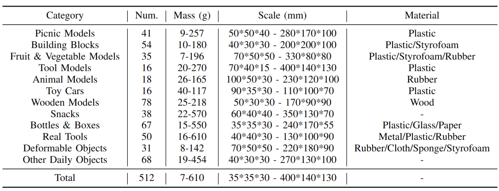

Objects Used for Evaluation
Our method is evaluated on a diverse set of objects with various materials, shapes, and masses, which all unseen during training.
500+ real-world objects used in our experiments.

Robust grasping of various objects from single-view perception is fundamental for dexterous robots. Previous works often rely on fully observable objects, expert demonstrations, or static grasping poses, which restrict their generalization ability and adaptability to external disturbances. In this paper, we present a reinforcement-learning-based framework that enables zero-shot dynamic dexterous grasping of a wide range of unseen objects from single-view perception, while performing adaptive motions to external disturbances. We utilize a hand-centric object representation for shape feature extraction that emphasizes interaction-relevant local shapes, enhancing robustness to shape variance and uncertainty. To enable effective hand adaptation to disturbances with limited observations, we propose a mixed curriculum learning strategy, which first utilizes imitation learning to distill a policy trained with privileged real-time visual-tactile feedback, and gradually transfers to reinforcement learning to learn adaptive motions under disturbances caused by observation noises and dynamic randomization. Our experiments demonstrate strong generalization in grasping unseen objects with random poses, achieving success rates of 87.6% across 247,786 simulated objects and 85.3% across 512 real objects. We also demonstrate the robustness of our method to various disturbances, including unobserved object movement and external forces, through both quantitative and qualitative evaluations.
@inProceedings{zhang2025RobustDexGrasp,
title={Robust Dexterous Grasping of General Objects from Single-view Perception},
author={Zhang, Hui and Wu, Zijian and Huang, Linyi and Christen, Sammy and Song, Jie},
booktitle={Arxiv},
year={2025}
}